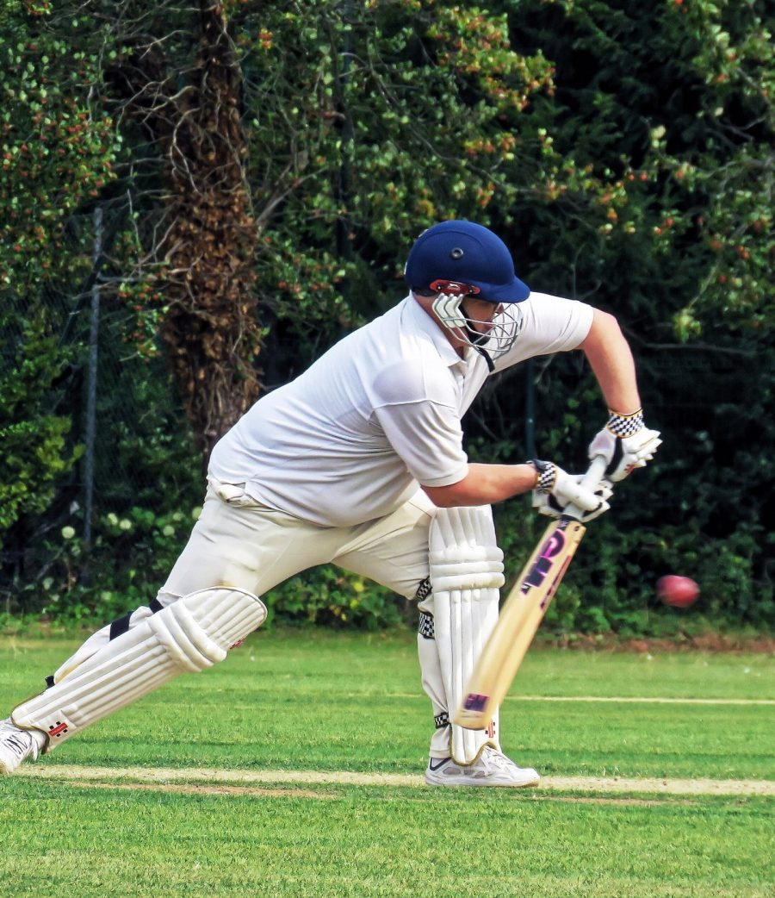

See every stroke.
Understand every angle.
Start with a batting photo for a posture report, or upload a clip to explore your movement. Understand your measurements, follow a daily practice plan, and track your consistency. Trained video models also recognise shot types.
Everything a batter needs
to read their own game.
Analysis, live training and a coach in one place. Built on a research dataset of 10,086 broadcast clips; every result comes with the evidence behind it.
Train live, with a coach that talks back.
SmartCricket now goes beyond reports. Stand in front of your camera and the app coaches you in real time.
Try live mirrorFrom your first capture to focused practice.
Capture
Upload a side-on photo, a single stroke or a whole nets video, or go live with your laptop or phone camera.
Understand
Review capture quality, visible joint measurements, and key video frames. Shot labels and heatmaps are available with trained models.
Practise and track
Check in, follow your daily drills, and review your weekly summary. Your dashboard guides you to the next step.

Real outputThis is what the AI sees.
This skeleton is the real result of SmartCricket's posture module on this photo: every body point detected, and each joint measured only when it is clearly visible.
Try it with your own photoPhoto: Acabashi, Wikimedia Commons, CC BY-SA 4.0. Overlay produced by SmartCricket AI.
Players, coaches and academies.
Players
Understand your own stroke without waiting for a coach.
- Posture report from one photo
- Live mirror with a voice coach
- Daily drills, streaks and levels
Coaches
Back up what you see with numbers you can show.
- Reference movement comparisons
- Estimated 2D and 3D joint angles
- One-click PDF reports to share
Academies
Give every player structured feedback, at scale.
- Admin console for every player
- See who needs a nudge
- Reference clips for each shot
Good to know.
Ready to see your batting the way the AI does?
Create a free account and analyse your first photo in under a minute.